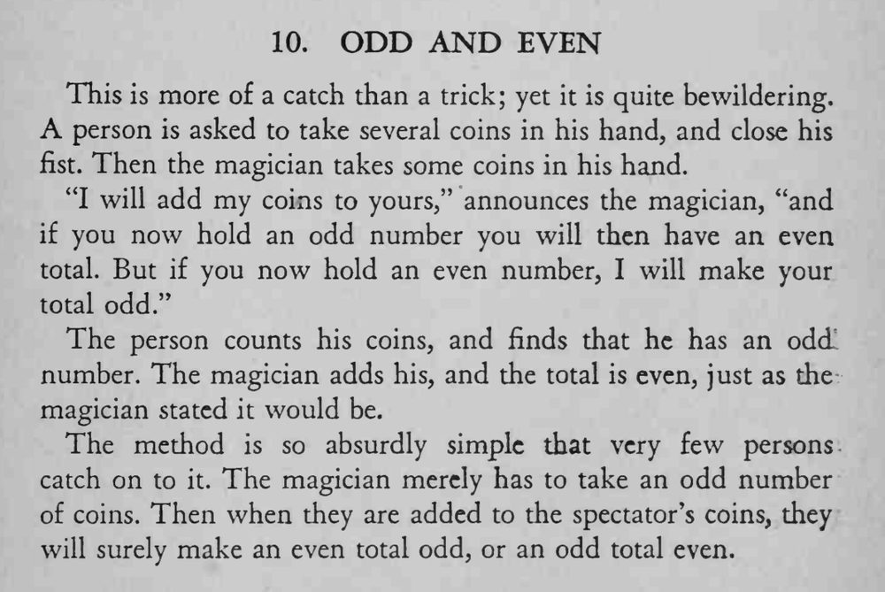

观众手握一些硬币，魔术师把自己的硬币加进去，总数立刻按他的预言从奇数变偶数或从偶数变奇数。
自己必须始终拿奇数枚：奇数加奇数得偶数，偶数加奇数得奇数。

This is more of a catch than a trick; yet it is quite bewildering. person is asked to take several coins in his hand, and close his fist. Then the magician takes some coins in his hand. "I will add my coins to yours," announces the magician, "and if you now hold an odd number you will then have an even total. But if you now hold an even number, I will make your total odd." The person counts his coins, and finds that he has an odd number. The magician adds his, and the total is even, just as the magician stated it would be. The method is so absurdly simple that very few persons catch on to it. The magician merely has to take an odd number of coins. Then when they are added to the spectator's coins, they will surely make an even total odd, or an odd total even.